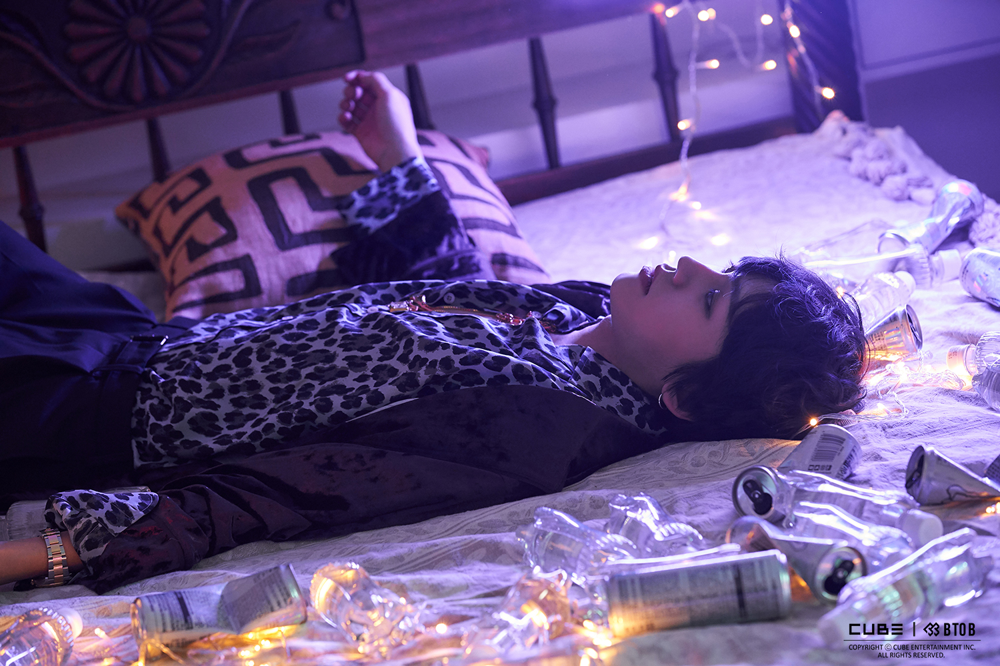

난 기대고 싶어 푸른 구름 위로 누워버리고 It's just time to go 놔버려 스스로 이것 또한 죄가 된다면 더 갈 곳이 없어 더 갈 곳이 없어
난 너의 짧은 환희보다 내가 중요했던 거야 알아야 했던 진실보단 거짓을 보여준 거야 세상이 나에게 늘 좋은 것만 보여주듯 작은 손바닥으로 눈이라도 가리고 싶은 거야 넌 억울하겠지만 우린 모두 피해자야 태어나 사랑한 다음 아픔을 겪어야 한다는 현실을 봐 새까만 점이 되어 사라지는 건 누군가 말해 준 것만 같은 걸 Oh 
뜨거운 말이 모두 식을 때면 널 보지 않아도 I know why you’re so down 우린 알고 있지만 모른 척 그게 편해서 Like a spoiler 사실 별로 알고 싶지도 않았던 그 모습을 먼저 보인 건 You who who whoo who 눈물을 잠근 다음 You who who whoo who Baby I’ll lay me down
상처받으면 어때 조금 체면 구겨지면 좀 어때 널 사랑하는 일보다는 내게 더 큰일은 없어 어디를 보니 넌 위로 일어나줘 Stand up 우리는 꼭꼭 시간이 약이야 믿지 않아 난 알고 있어도 모른 척 No 예쁜 길 꽃 속에 더 더 Let you down